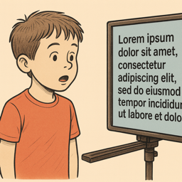
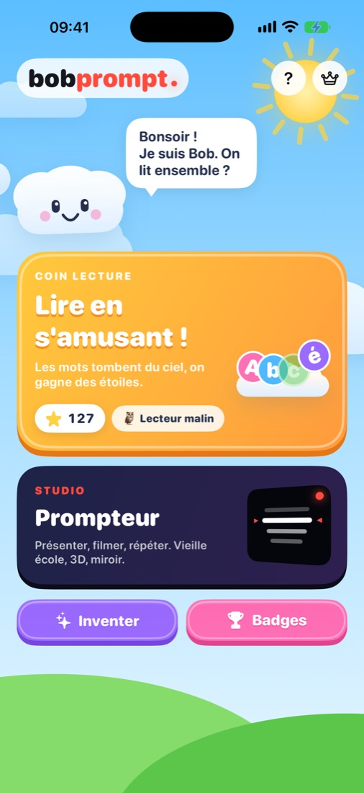
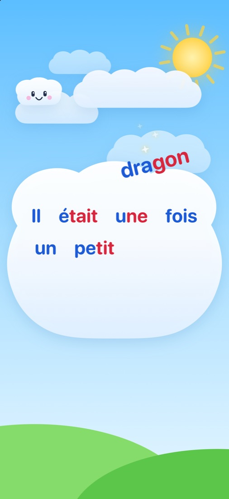
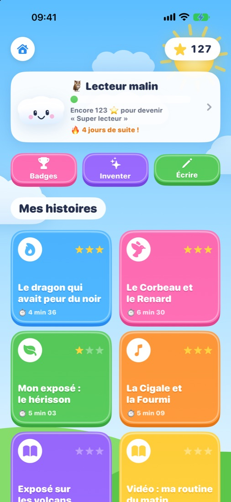
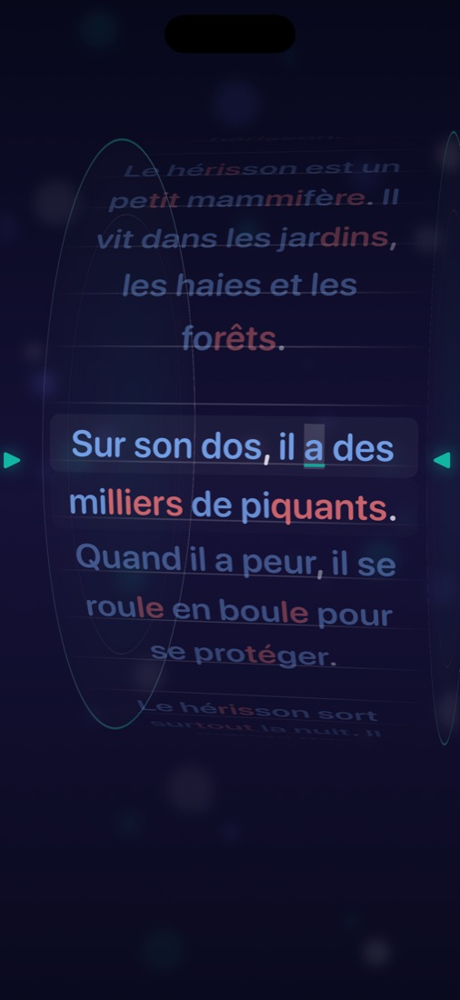
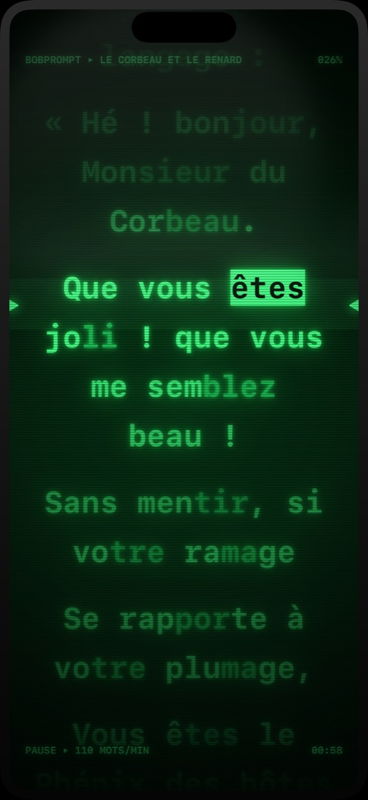

Le prompteur de toute la famille
Les enfants apprennent à lire en s'amusant, les grands présentent et filment sans réciter.
Télécharger sur l'App StoreLes mots tombent du ciel un à un et se posent sur un nuage. Chaque phrase lue rapporte une étoile.
Présenter, filmer, répéter. Styles vieille école et 3D, miroir, voix, télécommande.





Chaque mot tombe au moment de le lire et se pose sur un nuage. On touche un mot pour l'entendre.
a-mi, ta-bleau, pa-pi-llon : deux couleurs qui alternent, le mot en cours surligné.
Allures escargot, tortue, lapin, fusée, ou le bouton « mot suivant ». De 10 à 260 mots par minute.
Une étoile par phrase lue, des niveaux, des badges et une série de jours pour donner envie de revenir.
Écran cathodique vert ou ambre, machine à écrire qui tape le texte avec le ding de fin de ligne.
Un tambour qu'on fait tourner du doigt et qui suit l'inclinaison, des cartes qui se tournent comme des pages.
La voix lit et fait défiler le texte mot à mot, plus lentement aux allures d'apprentissage.
Miroir pour prompteur à vitre, compte à rebours, clavier et télécommande Bluetooth.
Tout s'enregistre tout seul. Reprise là où vous vous étiez arrêté. Six exemples fournis.
Avec Apple Intelligence, sur l'appareil, sur les modèles compatibles (ou votre propre clé OpenAI).
Toutes les fonctions sont gratuites, avec 2 textes personnels. Premium, en un achat unique, permet d'en garder 50. Les exemples fournis ne comptent pas.
Aucun compte, aucune publicité, aucun suivi. Les textes, les réglages et les récompenses restent sur votre appareil. Politique de confidentialité
iPhone et iPad, iOS 17 ou plus récent.